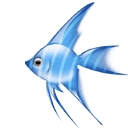

<!doctype html>
<html>
<head>
<meta charset="utf-8">
<title>作业：图片跟着鼠标走</title>
</head>

<body>

     <!-- <div id="move">
         
      </div>-->
      
      <!-- 改进版 -->
      

   
   <script>
      /* window.onload=move;
       var moves=document.getElementById("move");
	   var imgs=document.getElementById("img");
	   function move(){
	      moves.onmousemove=function(event){
		      var event=event?event:window.event;
			  imgs.style.cssText="display:block;position:absolute;top:"+(parseInt(event.clientY)-60)+"px;left:"+(parseInt(event.clientX)-70)+"px;"; 
		  }
	   }*/
	   
	   //改进版的
	  document.onmousemove=function(event){         //鼠标的移动事件
	      var event=event?event:window.event;
		  document.getElementById("fish").style.top=(event.clientY-40)+"px";    //图片的样式距上的距离为鼠标现在的距上坐标（event.clientY）减40的目的是使鼠标的位置不是在图片的左上角
		  document.getElementById("fish").style.left=(event.clientX-18)+"px";
	 } 
   </script>
</body>
</html>
